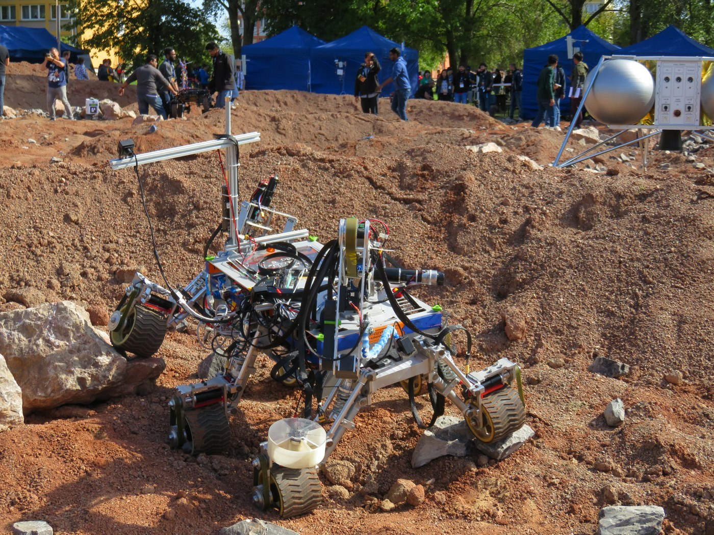

← All projects

Theia
OzU Rover Team | 2018 – 2019 | Mechanical designer, then team lead
13th of 56 teams (ERC 2019)

What?
- Theia was built by the OzU Rover Team for the European Rover Challenge.
- Teams design and build a Mars rover prototype for tele-operated or autonomous tasks that assist astronauts.
Results
- ERC 2018: 26th/65 as mechanical designer.
- ERC 2019: 13th/56 as team lead, through leadership and design optimization.